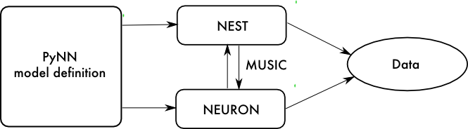

An integration layer for neural simulation: PyNN in the software forest
Andrew P. Davison1, Mikael Djurfeldt2,3, Jochen M. Eppler4, Padraig Gleeson5, Michael Hull6, Eilif B. Muller7
1Unité de Neurosciences, Information et Complexité, Centre Nationale de la Recherche Scientifique (CNRS), Gif sur Yvette, France
2PDC Center for High Performance Computing, School of Computer Science and Communication, KTH, Stockholm, Sweden
3INCF Secretariat, Stockholm, Sweden
4Institute of Neuroscience and Medicine (INM-6) and Institute for Advanced Simulation (IAS-6), Forschungszentrum Jülich and JARA, Jülich, Germany
5Department of Neuroscience, Physiology and Pharmacology, University College London, London, UK
6Institute for Adaptive and Neural Computation, University of Edinburgh, Edinburgh, UK
7Blue Brain Project, Brain Mind Institute, Ecole Polytechnique Fédérale de Lausanne (EPFL), Lausanne, Switzerland
About PyNN
PyNN (pronounced 'pine') is a simulator-independent language for building spiking neuronal network models. A PyNN script runs without modification on any simulator or neuromorphic hardware platform that PyNN supports (currently NEURON, NEST, PCSIM, MOOSE, Brian, the BrainScaleS platform and the SpiNNaker platform).
PyNN provides a library of standard neuron, synapse and synaptic plasticity models, which have been verified to work the same on the different supported simulators. PyNN also provides a set of commonly-used connectivity algorithms (e.g. all-to-all, random, distance-dependent, small-world) but makes it easy to provide your own connectivity in a simulator-independent way.
Even if you don't wish to run simulations on multiple simulators, you may benefit from writing your simulation code using PyNN's powerful, high-level interface. In this case, you can use any neuron or synapse model supported by your simulator, and are not restricted to the standard models.
In this poster, we showcase five recent developments that extend PyNN's capabilities. In each case, the extension involves integrating PyNN with existing, stand-alone software. Taken as a whole, these new features are a good illustration both of the merits of Python in general and PyNN in particular as a federation platform/integration tool for neuronal simulation (cfCornelis et al. 2012), and of the benefits of a modular approach to neuroscience software development.
PyNN and NeuroML
NeuroML (Gleeson et al., 2010) is an XML-based, declarative language for describing neuronal network models, in particular models with detailed dendritic morphologies. Exporting PyNN models to NeuroML is very straightforward:
import pyNN.nineml as sim
sim.setup(file="my_model.nml")
# the rest of your script as usual.
Only the model description is exported. The description of what to record, how long to simulate for, etc. is not exported. We are looking into using the SED-ML language to export this information. Importing NeuroML descriptions into PyNN is planned for the near future.
PyNN and NineML
NineML (Raikov et al., 2011) is another XML-based, declarative language for describing neuronal network models. It was developed to support explicit specification of the mathematics of neuronal and synaptic models, in contrast to the implicit specification in NeuroML v1 (note however, that NeuroML v2 will also support such explicit mathematical specifications).
For example, here is an integrate-and-fire neuron described using the Python interface to NineML:
As for NeuroML, we are currently working on exporting and importing entire PyNN scripts as NineML.
PyNN and MUSIC
Using MUSIC without PyNN: a separate script, and separate data handling is needed for each simulator.

Using MUSIC with PyNN: the entire model can be represented in a single script, and data handling is unified.
The MUSIC library Djurfeldt et al., 2010) enables
independent, parallel neural simulators to exchange data, such as spike times, and as such greatly facilitates multi-scale modelling.
There remain several barriers to routine use of such multi-simulations.
In particular, each part of the model must be programmed using the
particular language used by the simulator on which
it will be simulated, which can make coordination difficult.
Similarly, each simulator will export data in its own particular
format, and manipulation of such heterogeneous datasets to enable a coherent
analysis can be equally challenging.
By combining PyNN and MUSIC, we gain the ability
to specify a multi-simulator model and experimental protocol in a single script
using a single programming language. In other words, MUSIC adds to PyNN the
ability to distribute a model over multiple simulators, while PyNN adds to MUSIC
the possibility of describing a multi-simulator model in a single script, and
a unified representation of output data.
Neo is a package for representing electrophysiology data in Python, together with support for reading a wide range of neurophysiology file formats, including Spike2, NeuroExplorer, AlphaOmega, Axon, Blackrock, Plexon, Tdt, and support for writing to a subset of these formats plus other formats including Matlab and HDF5.
Neo 0.3 architecture
The goal of Neo is to improve interoperability between Python tools for analyzing, visualizing and generating electrophysiology data by providing a common, shared object model. Neo implements a hierarchical data model well adapted to intracellular and extracellular electrophysiology and EEG data with support for multi-electrodes. Neo objects behave just like normal NumPy arrays, but with additional metadata, checks for dimensional consistency and automatic unit conversion.
Using Neo provides several advantages:
data objects contain essential metadata, such as units, sampling interval, etc.;
data can be saved to any of the file formats supported by Neo, including HDF5 and Matlab files;
it is easier to handle data when running multiple simulations with the same network (calling reset() between each one);
it is possible to save multiple signals to a single file;
better interoperability with other Python packages using Neo (for data analysis, etc.).
Here is a very simple example:
import pyNN.neuron as sim
import matplotlib.pyplot as plt
from quantities import nA
sim.setup()
cell = sim.Population(1, sim.HH_cond_exp())
step_current = sim.DCSource(start=20.0, stop=80.0)
step_current.inject_into(cell)
cell.record('v')
for amp in (-0.2, -0.1, 0.0, 0.1, 0.2):
step_current.amplitude = amp
sim.run(100.0)
sim.reset(annotations={"amplitude": amp*nA})
data = cell.get_data()
sim.end()
for segment in data.segments:
vm = segment.analogsignalarrays[0]
plt.plot(vm.times, vm,
label=str(segment.annotations["amplitude"]))
plt.legend(loc="upper left")
plt.xlabel("Time (%s)" % vm.times.units._dimensionality)
plt.ylabel("Membrane potential (%s)" % vm.units._dimensionality)
plt.show()
PyNN and CSA
The connection-set algebra (CSA; Djurfeldt, 2012)
is a general formalism for specifying the
connectivity of neuronal network models. CSA provides operators to
form more complex sets of connections from simpler ones. The
CSA is expressive enough to describe a wide range of connectivities
and can serve as a concise notation for network structure in
scientific writing as well as in model description code for neural
simulations.
For example, random connectivity is represented by \(\overline{\rho}\), while one-to-one connections are represented by \(\overline{\delta}\). To connect a population randomly to itself with 50% connectivity, but without autapses, you would use \(\overline{\rho}(0.5) - \overline{\delta}\). Much more complex connectivity, including dependencies on spatial geometry, can also easily be expressed.
PyNN provides the CSAConnector class, which accepts a ConnectionSet object from the Python csa library, and connects a PyNN network accordingly:
import csa
import pyNN.nest as sim
from csa import cset, random, oneToOne
...
connection_set = cset(random(0.5) - oneToOne, weight, delay)
projection = sim.Projection(pre, post,
sim.CSAConnector(connection_set))
...
Where the backend simulator supports the ConnectionGenerator interface, PyNN passes the ConnectionSet object to the backend, where the connection loop can take place in C++, for much improved performance. Otherwise, the connection loop takes place within PyNN.
Future plans
The final release of PyNN 0.8.0 is expected in November 2013, but the beta versions are stable enough to use now.
In addition to the features shown here, PyNN 0.8 will add support for the MOOSE simulator.
For PyNN 0.9, it is planned to add cross-simulator support for multi-compartmental models (it is already possible to use multi-compartmental NEURON models with PyNN, but this is not simulator-independent), and support for GENESIS 3.
Acknowledgments
This work was supported by European Union projects FP7-269921 (BrainScaleS) and FP6-015879 (FACETS).
JME was partially supported by the
Helmholtz Association: HASB and portfolio theme SMHB; the Jülich Aachen
Research Alliance (JARA); the VSR computation time grant JINB33 on the
JUQUEEN supercomputer in Jülich; the Next-Generation Supercomputer
Project of MEXT; and EU Grant FP7-269921 (BrainScaleS).
PG is funded by the Wellcome Trust (G086699).
NineML, CSA and MUSIC development were supported by the International Neuroinformatics Coordinating Facility (INCF).
References
Cornelis H, Coop AD, Bower JM (2012) A Federated Design for a Neurobiological Simulation Engine: The CBI Federated Software Architecture. PLoS ONE 7(1): e28956. doi:10.1371/journal.pone.0028956
Raikov I, Cannon R, Clewley R, Cornelis H, Davison AP, De Schutter E, Djurfeldt M, Gleeson P, Gorchetchnikov A, Plesser HE, Hill S, Hines ML, Kriener B, Le Franc Y, Lo C-C, Morrison A, Muller E, Ray S, Schwabe L, Szatmary B (2011) NineML: the network interchange for neuroscience modeling language. BMC Neurosci. 12(Suppl 1): P330. doi: 10.1186/1471-2202-12-S1-P330
Gleeson P, Crook S, Cannon RC, Hines ML, Billings GO, et al. (2010) NeuroML: A Language for Describing Data Driven Models of Neurons and Networks with a High Degree of Biological Detail. PLoS Comput Biol 6(6): e1000815. doi:10.1371/journal.pcbi.1000815
Davison AP, Brizzi T, Estebanez L, Jaillet F, Mahnoun Y, Rautenberg P, Sobolev A, Wachtler T, Yger P, Garcia S (2011) Neo: representing and manipulating electrophysiology data in Python. Proceedings of EuroSciPy 2011. http://pythonneuro.sciencesconf.org/903
Carnevale, N.T. and Hines, M.L. (2006) The NEURON Book. Cambridge, UK: Cambridge University Press.
Djurfeldt M, Hjorth J, Eppler JM, Dudani N, Helias M, Potjans TC, Bhalla US, Diesmann M, Kotaleski JH, Ekeberg O. (2010) Run-time interoperability between neuronal network simulators based on the MUSIC framework. Neuroinformatics 8(1):43-60. doi:10.1007/s12021-010-9064-z
Davison AP, Brüderle D, Eppler JM, Kremkow J, Muller E, Pecevski DA, Perrinet L and Yger P (2009) PyNN: a common interface for neuronal network simulators. Front. Neuroinform. 2:11 doi:10.3389/neuro.11.011.2008
Eppler JM, Djurfeldt M, Muller, E, Diesmann M, Davison AP (2012) Combining simulator independent network descriptions with run-time interoperability based on PyNN and MUSIC. Proceedings of Neuroinformatics 2012.